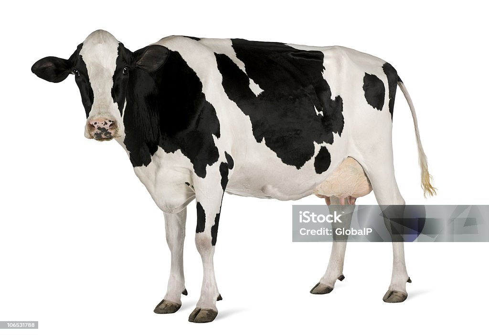
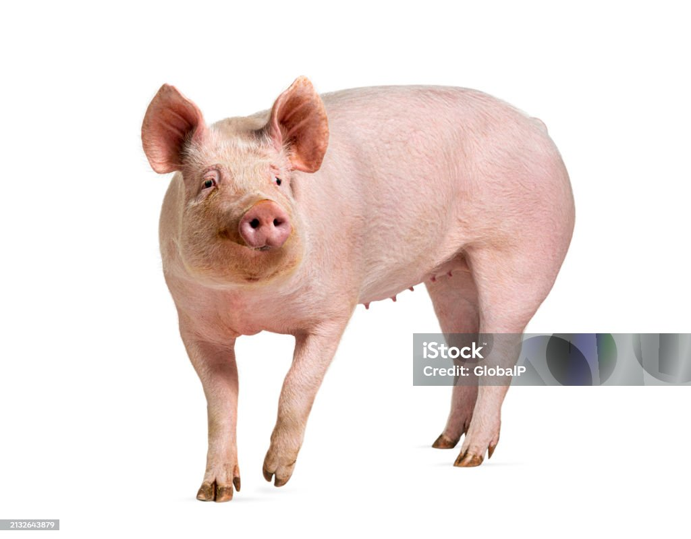

<!DOCTYPE html>
<html>
  <head>
    <title>Visual World Experiment</title>
    <script src="https://unpkg.com/jspsych@8.0.0"></script>
    <script src="https://unpkg.com/@jspsych/plugin-preload@2.0.0"></script>
    <script src="https://unpkg.com/@jspsych/plugin-html-button-response@2.0.0"></script>
    <script src="https://unpkg.com/@jspsych/plugin-html-keyboard-response@2.0.0"></script>
    <script src="https://unpkg.com/@jspsych/plugin-image-keyboard-response@2.0.0"></script>
    <script src="https://unpkg.com/@jspsych/plugin-audio-keyboard-response@2.0.0"></script>
    <script src="https://unpkg.com/@jspsych/plugin-webgazer-init-camera@2.0.0"></script>
    <script src="https://unpkg.com/@jspsych/plugin-webgazer-calibrate@2.0.0"></script>
    <script src="https://unpkg.com/@jspsych/plugin-webgazer-validate@2.0.0"></script>
    <script src="https://cdn.jsdelivr.net/gh/jspsych/jspsych@jspsych@7.0.0/examples/js/webgazer/webgazer.js"></script>
    <script src="https://unpkg.com/@jspsych/extension-webgazer@1.0.3"></script>
  </head>
  <body></body>    
  <script>

    /* initialize jsPsych */
    var jsPsych = initJsPsych({
      extensions: [
        {type: jsPsychExtensionWebgazer}
      ]
    });
    /* preload media https://www.jspsych.org/latest/overview/media-preloading/ */
    var images = ['img/cat.jpg', 'img/dog.jpg',
        'img/cow.jpg', 'img/pig.jpg'];
    var audio =  ['audio/cat.m4a', 'audio/dog.m4a',
    'audio/cow.m4a', 'audio/pig.m4a'];
    var preload = {
      type: jsPsychPreload,
      images: images,
      audio: audio
    };

    /* create timeline */
    var timeline = [];

    timeline.push(preload);
    /* Calibration code from https://www.jspsych.org/latest/overview/eye-tracking/ */
    var camera_instructions = {
      type: jsPsychHtmlButtonResponse,
      stimulus: `
        <p>In order to participate you must allow the experiment to use your camera.</p>
        <p>You will be prompted to do this on the next screen.</p>
        <p>If you do not wish to allow use of your camera, you cannot participate in this experiment.<p>
        <p>It may take up to 30 seconds for the camera to initialize after you give permission.</p>
      `,
      choices: ['Got it'],
    }
    timeline.push(camera_instructions);

    var init_camera = {
      type: jsPsychWebgazerInitCamera
    }
    timeline.push(init_camera);
    var calibration_instructions = {
      type: jsPsychHtmlButtonResponse,
      stimulus: `
        <p>Now you'll calibrate the eye tracking, so that the software can use the image of your eyes to predict where you are looking.</p>
        <p>You'll see a series of dots appear on the screen. Look at each dot and click on it.</p>
      `,
      choices: ['Got it'],
    }
    timeline.push(calibration_instructions);
    var calibration = {
      type: jsPsychWebgazerCalibrate,
      calibration_points: [
        [25,25],[75,25],[50,50],[25,75],[75,75]
      ],
      repetitions_per_point: 2,
      randomize_calibration_order: true
    }
    timeline.push(calibration);
    var validation_instructions = {
      type: jsPsychHtmlButtonResponse,
      stimulus: `
        <p>Now we'll measure the accuracy of the calibration.</p>
        <p>Look at each dot as it appears on the screen.</p>
        <p style="font-weight: bold;">You do not need to click on the dots this time.</p>
      `,
      choices: ['Got it'],
      post_trial_gap: 1000
    }
    timeline.push(validation_instructions);
    var validation = {
      type: jsPsychWebgazerValidate,
      validation_points: [
        [25,25],[75,25],[50,50],[25,75],[75,75]
      ],
      roi_radius: 200,
      time_to_saccade: 1000,
      validation_duration: 2000,
      data: {
        task: 'validate'
      }
    }
    timeline.push(validation);
    var recalibrate_instructions = {
      type: jsPsychHtmlButtonResponse,
      stimulus: `
        <p>The accuracy of the calibration is a little lower than we'd like.</p>
        <p>Let's try calibrating one more time.</p>
        <p>On the next screen, look at the dots and click on them.<p>
      `,
      choices: ['OK'],
    }

    var recalibrate = {
      timeline: [recalibrate_instructions, calibration, validation_instructions, validation],
      conditional_function: function(){
        var validation_data = jsPsych.data.get().filter({task: 'validate'}).values()[0];
        return validation_data.percent_in_roi.some(function(x){
          var minimum_percent_acceptable = 50;
          return x < minimum_percent_acceptable;
        });
      },
      data: {
        phase: 'recalibration'
      }
    }
    timeline.push(recalibrate);
    var calibration_done = {
      type: jsPsychHtmlButtonResponse,
      stimulus: `
        <p>Great, we're done with calibration!</p>
      `,
      choices: ['OK']
    }
    timeline.push(calibration_done);
    /* welcome message */
    var welcome = {
      type: jsPsychHtmlKeyboardResponse,
      stimulus: "Welcome to the experiment. Press any key to begin."
    };
    timeline.push(welcome);

    /* define instructions trial */
    var instructions = {
      type: jsPsychHtmlKeyboardResponse,
      stimulus: `<p> You will hear audio and see four pictures. Please look at the picture described by the audio. </p>`,
      post_trial_gap: 2000
    };
    timeline.push(instructions);

    /* define trial stimuli array for timeline variables 
      Note: ended up not using these as timeline variables because I wanted to
      alternate fixation and test trials */
    var test_stimuli = [
      { audio: 'audio/cat.m4a' },
      { audio: 'audio/dog.m4a' },
      { audio: 'audio/cow.m4a' },
      { audio: 'audio/pig.m4a' }
    ];

    /* define fixation and test trials */
    var fixation = {
      type: jsPsychHtmlKeyboardResponse,
      /* for centering: https://css-tricks.com/quick-css-trick-how-to-center-an-object-exactly-in-the-center/ */
      stimulus: '<div style="font-size:60px; position: absolute; top: 50%; left: 50%; transform: translate(-50%, -50%);">+</div>',
      choices: "NO_KEYS",
      trial_duration: function(){
        return jsPsych.randomization.sampleWithoutReplacement([250, 500, 750, 1000, 1250, 1500, 1750, 2000], 1)[0];
      },
      data: {
        task: 'fixation'
      }
    };
    alternating_with_fixation = [];
    /* Shuffle timeline variables for a random order
      https://stackoverflow.com/questions/2450954/how-to-randomize-shuffle-a-javascript-array */
    let shuffled_timeline_variables = test_stimuli
      .map(value => ({ value, sort: Math.random() }))
      .sort((a, b) => a.sort - b.sort)
      .map(({ value }) => value);

    /* Alternate fixation and test trials */
    for (var i = 0; i < shuffled_timeline_variables.length; i++) {
      alternating_with_fixation.push(fixation);
      var test = {
        type: jsPsychAudioKeyboardResponse,
        stimulus: shuffled_timeline_variables[i].audio,
        choices: "NO_KEYS",
        trial_duration: 5000,
        /* fill up the whole screen with the grid. Fitting images: 
          https://stackoverflow.com/questions/50542629/make-image-fit-css-grid */
        prompt: `
          <div style="display: grid; grid-template-columns: 50% 50%; grid-template-rows: 50% 50%; height: 100vh; width: 100vw;">
            </img>
            </img>
            </img>
            </img>
          </div> 
          
        `,
        data: {
          task: 'response'
        },
        extensions: [
          {type: jsPsychExtensionWebgazer, params: {targets: ['#cow-target', '#pig-target', '#cat-target', '#dog-target']}}
        ]
      };
      alternating_with_fixation.push(test);
    }
    /* define test procedure */
    var test_procedure = {
      timeline: alternating_with_fixation,
      // timeline_variables: test_stimuli,
      randomize_order: false
      /* Wanted to use alternating groups for fixation, but realized that won't work. Shouldn't be grouped. */
      // sample: {
      //   type: "alternate-groups",
      //   groups: [[4], [0,1,2,3]],
      //   randomize_group_order: false
      // }

    };
    timeline.push(test_procedure);
    /* https://github.com/jspsych/jsPsych/blob/main/examples/webgazer.html */
    var done = {
      type: jsPsychHtmlButtonResponse,
      choices: ['CSV', 'JSON'],
      stimulus: `<p>Done!</p><p>If you'd like to download a copy of the data to explore, click the format you'd like below</p>`,
      on_finish: function(data){
        if(data.response == 0){
          jsPsych.data.get().localSave('csv','webgazer-sample-data.csv');
        }
        if(data.response == 1){
          jsPsych.data.get().localSave('json', 'webgazer-sample-data.json');
        }
      }
    };
    timeline.push(done);
    /* start the experiment */
    jsPsych.run(timeline);
  </script>
</html>